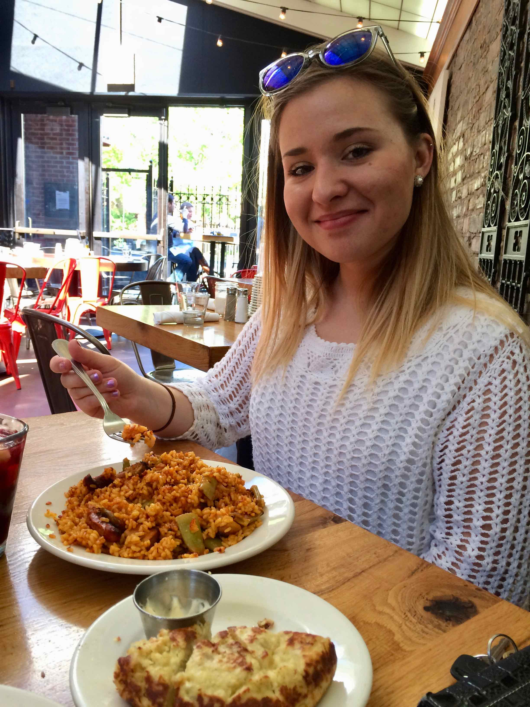

A little about me...

Hello! My name is Katarzyna – pronounced [kaa taa zhin ah]. It is Polish version of Katherine, but I go by Kathy. My favorite hobbies include: travelling, learning new things, trying new recipes to cook, strolling through the Chicago Art Institute, and taking my dog, Typhoon, on long walks.
If you ask what my favorite beverage to drink is I will say herbal tea. However, I also cannot live without coffee. One of my favorite dishes to cook is fish tacos. But one of my favorite things to eat are waffles. The best waffles I’ve ever had were actually in Brussels, Belgium. My favorite Art period is the French Impressionism. Speaking of impressions, my German Shepard usually makes a scary impression on most people because of his size. But he is the sweetest boy once you get to know him.